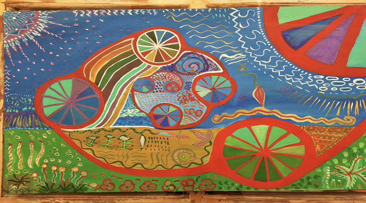
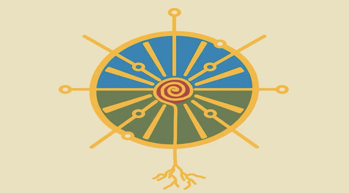

A construção das identidades ciganas no Brasil: contexto, diáspora, ocupação de território e cultura
Ao final desta aula, você será capaz de:
- Identificar as principais características da cultura, tradição e diáspora dos povos ciganos no Brasil.
- Comparar diferentes perspectivas filosóficas sobre identidade e cultura, avaliando como essas concepções influenciam a construção e a forma como os povos ciganos são representados na sociedade.
- Analisar como os contextos históricos e as políticas de exclusão impactaram a identidade e a ocupação territorial dos povos ciganos.
Aspectos históricos e suas implicações
Uma breve introdução
Ecos das (des)construções ciganas são sentidos principalmente em relação à compreensão do que é existir ou por que não dizer resistir, e o “ser cigano” é a chave que solapa, incontestavelmente, certezas e dogmas do que o mundo gajon acredita ser a “essência” cigana / ciganeidade.
Muitas são as lendas referentes à origem e à cultura cigana. Vejamos algumas a seguir:
O consenso sobre a origem dos ciganos está nas evidências robustas e consistentes que os associa aos Rajputs, um grupo de guerreiros do noroeste da Índia, conhecidos por demonstrações de bravura, honra, tradições de cavalaria, rituais, festejos fervorosos, casamentos arranjados, vestimentas coloridas e que tinham a arte como elemento importantíssimo. De acordo com essa leitura, os ciganos são descendentes dos Rajputs que fugiram da Índia após a invasão muçulmana no século XI. Eles teriam migrado para o oeste, passando pelo Oriente Médio e Europa, levando consigo suas tradições, cultura e língua e essa última, responsável pela hipótese mais provável para a origem desses nômades.
Estudos linguísticos mostram que a língua romani, falada pelos ciganos, tem raízes no sânscrito (origem Hindu), a língua clássica da Índia. Essa língua, que é somente falada, pois não há escrita cigana / Romani.
Estudos genéticos e antropológicos corroboram a tese de que a origem dos povos ciganos remonta ao território atualmente compreendido como Paquistão. A análise de marcadores genéticos específicos e a variabilidade genética das populações ajudam a traçar as migrações, enquanto os antropólogos confirmam essa relação com base em características como cor, pigmentação da pele, índices cefálicos, grupos sanguíneos e tensão arterial, combinando esses dados com registros e documentação dos roteiros migratórios e das atividades desenvolvidas.
Sabe-se que os ciganos aparecem na história logo após o ano 1.000 e 1.500 e por serem ágrafos, suas origens, na maioria das vezes, estão pautadas em lendas, mitos, poesias, interpretações enfim, difundidas e debatidas por meio da visão e do entendimento dos gajons, sobre os ciganos. O que já torna a questão campo fértil para debate sob o holofote de pressupostos de reconhecimento identitário, ou seja, para além da observação do outro sobre os ciganos, que formam a imagem perceptível do tema.
O que temos é uma oportuna centelha para acender a reflexão sobre a Construção das Identidades Ciganas. Não se conseguirá com essas reflexões, esgotar as análises dessas questões. Objetiva-se tão somente contribuir com a discussão, para que os fatos aqui apontados não permaneçam soterrados, preteridos numa discussão geral como se fossem de menor importância ou sem potencial para intrigar e provocar os afeitos ao tema, pois acredita-se que somente com um debate que traga à tona seus pontos “mal resolvidos” e polêmicos poder-se-á buscar melhor compreensão e reflexão sobre o assunto.
- Assista ao Programa Um Tom de Resistência. Nele, o apresentador Ricardo Nêggo Tom recebe a bailarina bellydancer, percussionista e mestre em Direito Agrário pela UFG, Sara Macedo Kali, cigana da etnia Kalon, e o jornalista, cientista social, mestre em educação e cigano da etnia Calon, Aluízio de Azevedo Junior, para falarem sobre as tradições dos povos ciganos e o preconceito existente contra a sua cultura.
Discussão sobre conceitos de identidade, cultura e território

Os filósofos da antiguidade abordaram a questão da identidade de maneiras diversas, refletindo suas preocupações metafísicas, epistemológicas e éticas. Eles buscavam entender tanto o mundo ao seu redor, a "physis", quanto a identidade humana, definida como um ser racional em relação ao mundo.
Entenda o que cada um dos filósofos a seguir pensam sobre o conceito de identidade:
pan_tool_alt Clique Toque nos ítens abaixo para visualizar as definições
Defendia que o "ser" é uno e imutável, ou seja, sua presença e permanência são definidas pelo que ele realmente é. Para Parmênides, qualquer percepção que desafiasse essa visão seria uma ilusão e não poderia ser considerada, pois a identidade é algo inalterável e eterno.
Defendia que o ser e sua identidade são coisas mutáveis, os seres em si e suas identidades são fluidas e apresentam uma mudança constante. Observação mais presente nas frases da filosofia heracliana seria o fato de não sermos os mesmos mediante o próximo momento. Esse por sua vez apresenta uma ilustração também em suas defesas sobre as questões da estrutura da identidade, visto que essa pode ter diversas modificações tanto de quem a observa, como de seu pertencimento para com o mundo. Como o mesmo defende que tudo é algo fluído, logo a identidade apresentará em seu contexto esse processo de transformação.
Para Sócrates e seus discípulos, a identidade está diretamente relacionada ao autoconhecimento, à autocompreensão e à ética. Segundo ele, é por meio da busca pela verdade, alcançada através do autoconhecimento, que podemos encontrar a verdadeira identidade do ser humano.
Platão, aprofundando o pensamento socrático, insere a identidade em sua visão dualista, que distingue dois mundos: o inteligível ou perfeito (mundo das ideias) e o sensível, uma cópia imperfeita do primeiro. No mundo das ideias, tudo é imutável e eterno, enquanto, no mundo sensível, a identidade está sujeita a variações. Dessa forma, na perspectiva platônica, a verdadeira identidade se fundamenta nos aspectos imutáveis do mundo das ideias, onde reside o conhecimento autêntico.
A identidade apresenta a ideia conceitual sobre substância e essência, pois a identidade de um objeto ou ser, é definida pela sua forma, ou essência e matéria. É a identidade que permite a um ser, ser o que é. Mantendo a sua singularidade e continuidade presente no ambiente em que se vivencia os fatos ocorridos e vivenciados. Para Aristóteles a substância é o que de fato dá identidade a um ser, pois é o que estabelece sua relação com todas as coisas presentes em sua realidade, propriedade e também nas mudanças.
Durante a Idade Média, as questões de identidade foram discutidas no campo da teologia e da metafísica, explorando a natureza do ser, a existência e a relação entre essência e identidade. O debate girava em torno do que é verdadeiramente próprio do ser humano e de como essa identidade se estabelece em relação ao mundo.
Considerando o contexto cristão da Idade Média, conheça os pensamentos dos filósofos a seguir:
pan_tool_alt Clique Toque e arraste os cards abaixo para visualizar as informações
Com a revolução científica, novas possibilidades e explicações surgiram, permitindo que filósofos explorassem esse tema de maneira mais profunda e variada. Questões como identidade pessoal, continuidade e condições da existência passaram a ser discutidas sob diferentes perspectivas, muitas vezes focadas no indivíduo.
Descubra a seguir como os filósofos da modernidade compreendem a questão da identidade:
pan_tool_alt Clique Toque nos itens abaixo para visualizar as definições
A identidade se define a partir de sua famosa ideia “penso, logo existo”. Para ele, o eu está intrinsicamente ligado ao ato de pensar, duvidar, e à consciência de si.
A ideia está centrada nas esferas da memória, pois é a continuidade de determinada memória que vai estabelecer as relações de consciência e por sua vez da identidade do coletivo ou do individual.
Defende que a identidade pessoal é uma ilusão. Pois o "eu" não é uma substância persistente, e sim uma coleção de percepções, impressões que estão em movimento, mudança e experiência.
A identidade está ligada ao sujeito transcendental que é necessário para a experiência e a percepção. A identidade pessoal é ligada à unidade da consciência e à estrutura do conhecimento, que permite a experiência do mundo como coerente e ordenado.
Para Nietzsche a identidade é um processo contínuo de reelaboração, reinvenção e reavaliação.
Dessa forma, a identidade na cultura filosófica está estabelecida como tudo aquilo que é produzido pelo ser humano e repassado de geração para geração. Esta por sua vez pode também ter relação direta com as mudanças que são feitas entre ambiente (natureza) e o sujeito em que está inserido nesse ambiente.
Já outras definições estabelecem que a cultura é uma construção social que se enquadra e reestrutura toda a sua produção de acordo com as mudanças que vão surgindo na humanidade. Essas são construídas por meio das relações de poder que podem ser coercitivas de forma física ou normativa. Controladas e fortalecidas pelas redes de poder que estão propostas dentro dos sistemas sociais e das instituições socializadoras que estão vigentes como dominantes. Dessa forma é comum identificar que a cultura é um sistema vivo e que apresenta diversas facetas diferentes.
Em se tratando de território, o filósofo Deleuze, compreende que este não se limita a um espaço geográfico ou físico, todavia também se expande para algo que está profundamente entrelaçado com questões relacionadas com a cultura. O poder, identidade e práticas sociais vão estabelecer uma correlação entre as diferentes questões e subjetividades do território. Todo território apresenta uma relação de força, dominação e controle. Esse por sua vez está interligado às noções da construção de determinada identidade, visto que no território ocorre o processo de formação e negociação dessa identidade que não é fixa e sim modelável de acordo com as relações de poder que o sujeito esteja relacionado.
- Ouça a música Gelem Gelem, declarada internacionalmente como hino internacional Rom durante o Primeiro Congresso Mundial Rom, em 1971, quando se pensou ser necessário fazer um hino e uma bandeira comum que unificasse as diversas comunidades ciganas dispersas por todo o mundo.
- Ouça também a música Bute Pilon de Edy Britto e Samuel. Dupla sertaneja Calón e música com letra em Chib. Acesse aqui:
Abordagem histórica - Os povos ciganos no Brasil
Pessoas e grupos se relacionam e estão em constante movimento, construindo seus repertórios de sobrevivência diante de diferentes desafios. Ao inventar e reinventar, lidam com limites, tabu, relações de poder, criando espaços identitários, fronteiras e múltiplas conexões.
A cultura invoca o caráter transitório e inacabado das identidades e pertencimentos e os processos inesgotáveis de significação e ressignificação sem abrir mão do que as fronteiras culturais nos identificam etnicamente. Não se trata apenas de transmissão de herança, cristalização de tradições inabaláveis, descrições comportamentais, em sentido biológico aristotélico, sob o véu da estigmatização. É preciso entender a história ressonante para além da lógica hegemônica do discurso colonizador.
Em 2021, o ENEM (Exame Nacional do Ensino Médio) abordou em uma de suas questões a chegada dos ciganos no Brasil e trouxe à discussão os danos que a colonização portuguesa impôs a esses povos tradicionais.
Vejamos a questão: “Eu, Dom João, pela graça de Deus, faço saber a V. Mercê que me aprouve banir para essa cidade vários ciganos – homens, mulheres e crianças – devido ao seu escandaloso procedimento neste reino. Tiveram ordem de seguir em diversos navios destinados a esse porto, e, tendo eu proibido, por lei recente, o uso da sua língua habitual, ordeno a V. Mercê que cumpra essa lei sob ameaça de penalidades, não permitindo que ensinem dita língua a seus filhos, de maneira que daqui por diante o seu uso desapareça. (TEIXEIRA, 2008).
(Pergunta) A ordem emanada da Coroa portuguesa para sua colônia americana, em 1718, apresentava um tratamento da identidade cultural pautado em:
(Resposta) Suprimir formas divergentes de interação social.
Remonta a mesma conjuntura a expressão “palavra de baixo calão” utilizada para repudiar linguagens grosseiras / obscenas e que tem na etimologia da palavra “calão” o significado Caló, a língua dos ciganos ibéricos. Desde o século XV a palavra cigano é utilizada como insulto. A primeira referência em português que se tem registro é em “A farsa das ciganas” de Gil Vicente, de 1521. A partir do século XIX, os chamados "ciganólogos" passaram a utilizar os termos "tsiganos" ou "ciganos" para designar determinadas populações nômades. Estas comunidades, caracterizadas por uma forte tradição e uma consciência coletiva, tinham uma origem comum, definida por critérios étnicos e raciais específicos.
Por meio das pesquisas sobre a linguagem do “dialeto cigano” foi possível demarcar a Índia como a localização originária do povo cigano, como também permitiu reconstruir sua dispersão pelo mundo. Apesar das incertezas sobre datas, locais e contextos, os registros evidenciam sua permanência em diferentes regiões. A proibição de sua língua, acusada de falsidade e engano, a visão de seus trajes como exóticos ou “maltrapilhos”, a repressão da quiromancia e cartomancia pela Igreja Católica e o estilo de vida nômade, visto como incompatível com a civilização moderna, serviram de justificativa para perseguições, violências e políticas opressivas, como o degredo.
Vejamos a seguir os marcos históricos dos ciganos:
-
Século XV
Na Europa, registros da igreja católica condenando à excomunhão os ciganos sob acusação de bruxaria e proibindo de vagarem, deixando como ordem que deveriam servir a amos e quem contrariasse seria açoitado e teria orelhas cortadas, além de na história recente, vítimas do odioso regime do holocausto durante a 2.ª Guerra, quando mais de 500 mil de nós foram duramente perseguidos e assassinados.
-
Século XVISéculo XVI | 1574
João Torres, o primeiro cigano deportado com sua mulher Angelina e filhos, como consta em documento oficial. Nada garante que chegaram ao Brasil com vida e se permaneceram. Mas há suspeitas de que antes disso outros grupos ciganos foram obrigados a deixar o país para desafogar a migração dos que partiam da Europa e de outras Regiões do mundo, bem como para o povoamento da então colônia, ao tempo em que por lá, davam um jeito de se livrar daquelas pessoas que apresentavam costumes e hábitos completamente diferentes dos modos civilizatórios e catequistas da época, com isso quero dizer que, pelo que se tem documentado, a condenação se dava pelo simples fato de serem ciganos.
-
Século XVII | 1686 – Data Oficial do degredo de Portugal para o Brasil.
Destaque especial às políticas anticiganas em Portugal, iniciadas com as Ordenações Manuelinas que proíbem que os ciganos e seus descendentes ocupem cargos públicos, eclesiásticos e que recebam títulos honoríficos. Tal fato acirra-se no reinado de D. João III, que proíbe a entrada e expulsa todos os ciganos. Instalada a Inquisição, temos o Tribunal de Évora, uma ferramenta judicial para manter a ortodoxia católica e perseguir heresias. Continuam as políticas discriminatórias consolidadas com a Leis que impunham pena de morte aos ciganos que infringissem.
As políticas discriminatórias se intensificam nos séculos seguintes, em especial a partir do reinado de Dom. João V, sendo consideravelmente alto o número de expurgos em massa.
-
Século XIX
A partir da segunda metade do século XIX, com os estudos e avanços da ciência sobre “raças” e “cultura” foram ressaltadas as desigualdades e a concepção de inferioridade de uns em detrimento da superioridade de outros. Sob a luz de “novos” argumentos, continuou-se com políticas discriminatórias contra ciganos e o recrudescimento de atitudes voltadas ao que pode ser nomeado como “limpeza étnica”. Nesse contexto, muitos ciganos vieram para o Brasil.
As intensas e prolongadas políticas de expulsão transformaram o nomadismo num elemento cultural central das etnias ciganas. Paralelamente, essas expulsões foram acompanhadas por perseguições e violências físicas, incluindo genocídio, prisões e o sequestro de crianças, historicamente aplicados contra as comunidades ciganas. Como consequência, o racismo estrutural manifesta-se no acesso precário a serviços essenciais, como habitação, saneamento básico, educação e emprego formal.
No Brasil, não há nenhum registro de ondas discriminatórias contemporâneas tal como as vividas por comunidades ciganas europeias. Mas os reflexos da exclusão e apagamento na inescapável circulação de interesses são sentidos tão violentamente quanto, pois quando não se consegue identificar a ameaça e nem mesmo se reconhece que existe uma violência, mais ela se fortalece e intensifica. Representando tanto uma forma de punição quanto uma estratégia de colonização, os degredos tiveram impactos duradouros nas vidas dos condenados e nas sociedades para onde eram enviados. Para perto ou para longe, de uma vez só ou intermitentemente, nas fronteiras entre o autodeterminado centro (colonizador) e a periferia (a ser colonizada), a herança cruel adventícia foi perpetuada e sofisticada por aqui e dia após dia mantém o legado de exclusão e invisibilização, estigmatização.
Em relação aos povos ciganos no Brasil, ainda existem limitações na produção e na disponibilidade de dados oficiais sobre esta população. O IBGE não inclui a população cigana como categoria específica de identificação no Censo Demográfico, o que dificulta a obtenção de informações abrangentes sobre sua distribuição e suas condições de vida. A insuficiência de dados sobre quantos são, onde estão e quais são suas principais necessidades constitui um desafio para a formulação, implementação e avaliação de políticas públicas capazes de responder adequadamente às suas especificidades. Entender as relações de poder e de desigualdades na atual conjuntura da agenda cigana é imprescindível para uma análise acurada sobre o assunto.
Gestores públicos, agentes econômicos e diferentes atores responsáveis pela produção e circulação de informações exercem papel relevante na definição de narrativas, valores e perspectivas que orientam o debate público e a formulação de políticas. Quando esses processos ocorrem sem a participação efetiva dos grupos diretamente envolvidos, há o risco de que suas demandas, experiências e perspectivas sejam insuficientemente consideradas.
Nesse sentido, a participação de pessoas ciganas nos espaços de formulação, gestão e decisão das políticas públicas que lhes dizem respeito é fundamental para ampliar a representatividade e fortalecer a construção de ações alinhadas às suas realidades e necessidades. A presença de representantes ciganos em espaços institucionais de poder e decisão, inclusive na elaboração e implementação de políticas voltadas aos povos ciganos, contribui para que essas políticas sejam construídas de forma participativa, considerando os saberes, as experiências e as perspectivas das próprias comunidades.
"produzir um conhecimento de fato coletivo e dialógico com as pessoas ciganas e não sobre ou para os ciganos fará com que se construa uma nova narrativa e uma mudança essencial de perspectiva. É preciso que o cigano fale, seja ouvido e que represente a si. "
(SILVA, 2018. P.21).
Não restam dúvidas sobre o quanto os ciganos estão lutando e disputando lugar de fala sobre as mais diversas frentes e só se tem a dimensão de quanto é uma empreitada dificílima, quem está se movimentando para grandes mudanças nesse sentido.
- Assista ao documentário É Kalon, Olhares Ciganos, de Aluízio de Azevedo Silva Junior, 2011.
Sinopse: A saga dos ciganos, considerados uma das nações mais exóticas do mundo, devido ao misterioso universo cultural, é tocada nesta obra ao mostrar a vida e o cotidiano de um grupo Kalon, formado por cerca de 200 pessoas, que vivem e percorrem o Estado de Mato Grosso há mais de 80 anos.
Identidades Ciganas: nós, et cetera e vice-versa
Se você chegou até aqui já entendeu que o termo cigano não compreende um significado homogêneo. Há uma generalidade reducionista ao se chamar de ciganos indivíduos e/ou comunidades com diferenças significativas entre si, constituídos por diversos processos de hibridização. As designações, atribuídas por não ciganos foram assumidas pelos ciganos, obrigados a se identificarem de forma generalista, desconsiderando aspectos relevantes como o local de origem e a corrente linguística. Iremos, em linhas gerais, apresentar alguns componentes de cada um dos três grupos a saber:
pan_tool_alt Clique Toque e arraste os cards abaixo para visualizar as informações
Refletir sobre as identidades ciganas é um exercício de romper com o imaginário colonial e com as imposições da tradição metafísica, que sugere um pensamento desconectado do mundo. Na verdade, trata-se de uma reconciliação com o mundo, mesmo que a reflexão sobre ser cigano não produza um conjunto fixo de normas de conduta. A discussão sobre as identidades deve contribuir para desconstruir as continuidades feitas sem reflexão.
Nesse contexto, vale citar Roy Rogeres, um cigano calón de tradição circense e seu desejo manifestado na sua tese “Ciganos acampam em instituições de Ensino Superior”, com finalidade coletiva:
“que não tenhamos mais de demonstrar e comprovar outras habilidades, sem antes termos a nossa cidadania plenamente reconhecida. Que não sejamos mais tão subestimados, senão, admitidos por nossos saberes ancestrais, culturas e conhecimentos que tanto nos orgulham, nos distinguem e nos guiam”.
(FILHO, 2023. p.20)
Durante a apresentação da trajetória histórica da construção de sentidos em torno das identidades ciganas, destacam-se suas dimensões políticas e ideológicas. Examinamos as estratégias opressoras de violência simbólica presentes nas disputas pela definição e nomeação dessas identidades, frequentemente associadas a estereótipos e estigmas. Essas construções reforçam diversas formas de racismo, expressas tanto no preconceito e na discriminação quanto na violência física, como genocídios, expulsões, prisões, castigos corporais e separação de famílias. Além disso, vale ressaltar a abordagem dos danos materiais resultantes desse contexto, incluindo sequestro de bens, roubos e outras formas de expropriação.

Sobre a construção das Identidades Ciganas, vale referenciar a obra do artista Danilo Kallon, que leva a pensar o assunto como a metáfora de Rizoma para Deleuze e Guatarri, em contrapartida à metáfora de árvore, frequentemente usada para falar sobre construções “genealógicas”. O filósofo se inspirou na botânica para trazer tal relação. Não se vê uma inversão por pura inversão e sim uma inversão que leva a um deslocamento e toda uma reinscrição dos valores revelando a impossibilidade de o pensamento se organizar em torno de conceitos fechados em si mesmos, homogêneos e universais.
No Rizoma trata-se de um caule que une diversos brotos, como, por exemplo, a grama. Ou seja, os brotos podem se ramificar em uma direção qualquer, e se transformar em bulbos e conectar diversos pontos. Aqui encontramos um aspecto interessante que nos faz entender que não é necessária uma raiz como momento inicial para que esse fenômeno aconteça na planta (como nos acostumamos a relacionar com a árvore). Para se pensar a analogia que os filósofos supracitados fazem com a Construção das Identidades Ciganas é importante ter em mente a estrutura do conhecimento e como esta, segundo a filosofia ocidental, faz sua trajetória em busca de um uma verdade universal. Tal estrutura que dá origem às possibilidades de alcançar tal conhecimento advém do acúmulo de diversos saberes que caminham para um fim. Toda estrutura do conhecimento se inicia num ponto ou origem de robustez que pouco a pouco irá revelar e possibilitar que os sujeitos encontrem a verdade/a si. Cônscios dessa premissa, podemos entender que existe uma hierarquização dos saberes segundo essa árvore do conhecimento, sobretudo se estamos atentos ao tronco da árvore e ao seu papel na sustentação e manutenção das demais partes que a compõem. Deleuze e Guattari concebem diferentemente o processo de produção de saberes/conhecimento de si. Ambos não sustentam que exista um conhecimento no modo arbóreo citado anteriormente. O conhecimento se origina de qualquer parte e segue rumo a outra parte qualquer sem determinações específicas. Percebemos que eles abandonam essa forma de alcançar a verdade de forma segmentada, pois a estrutura rizomática de conhecer não estabelece momentos em que existam inícios e fins para as possibilidades do saber. Existem múltiplas formas de construção de realidade que se entrelaçam e constroem e reconstroem o real assim como a Construção das Identidades Ciganas que é ampla e desse modo pode ramificar-se e seguir para pontos distintos, gerando outros conhecimentos e assim sucessivamente.